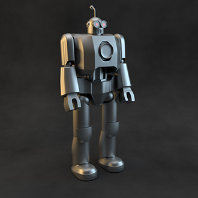
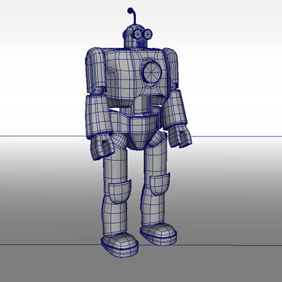
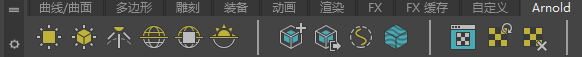
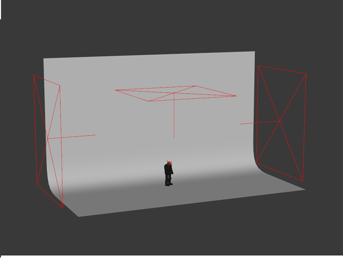
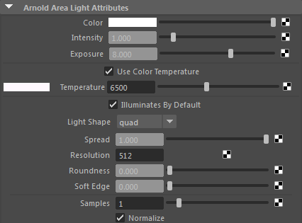
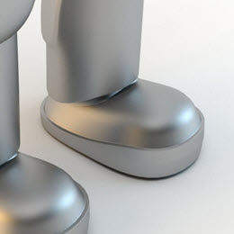
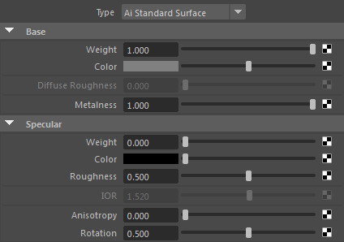
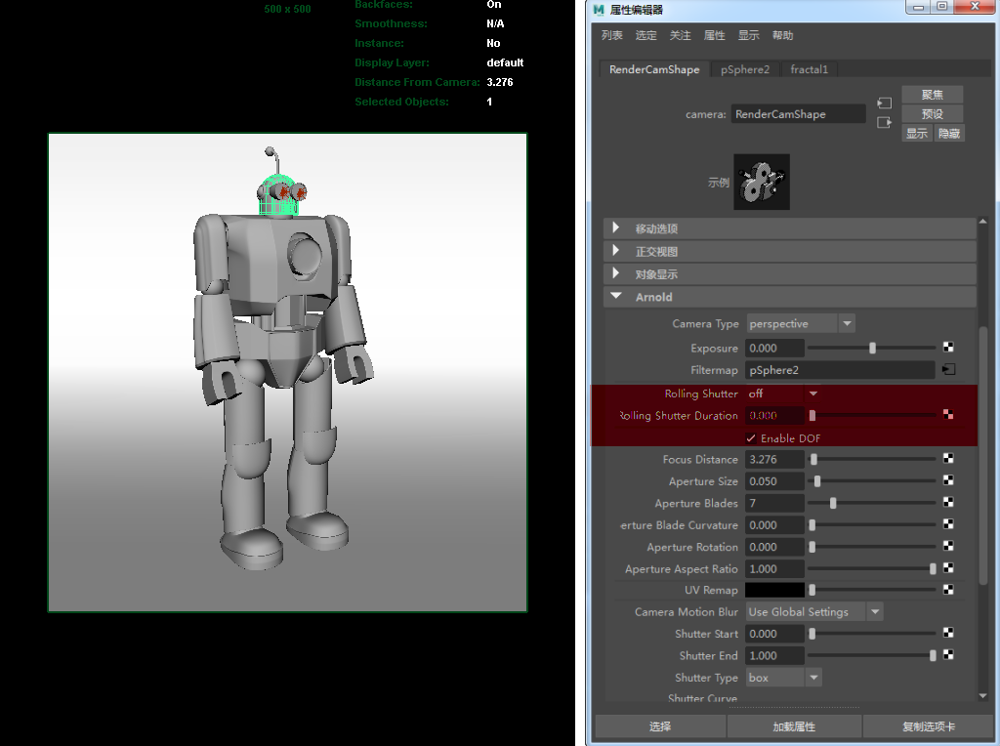
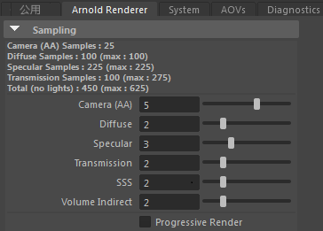

Arnold 是一款高级 Monte Carlo 光线跟踪渲染器，专为满足长篇动画和视觉特效电影的需求而构建。本新手教程将为您介绍 MtoA，这是一款允许在 Autodesk Maya 中直接使用 Arnold 渲染器的插件。在本教程中，我们将介绍如何构建一个可为各种物体进行照明和渲染的简单摄影照明工作室设置。我们将分步介绍如何使用 Arnold 渲染器为玩具机器人模型进行照明、着色和渲染。我们将使用 Arnold 的专有灯光来实现物理上精确、具有照片级真实度的照明设置。除了使用 Arnold 灯光以外，您还可以在通过 Arnold 进行渲染时使用标准 Maya 灯光。如果选择灯光后检查 Maya 属性编辑器及常规灯光属性，还会看到一组新的 Arnold 灯光属性，可以从中访问 Arnold 使用的附加设置。
我们将使用 standard_surface 着色器对机器人进行着色并赋予其金属磨光效果。standard_surface 着色器是一种多用途着色器，能够生成各种类型的材质（从简单的塑料到汽车涂料或皮肤）。standard_surface 着色器的功能非常强大，可以创建大量不同种类的材质，但起初可能有点令人生畏。由于控件数量较多，standard_surface 着色器分为若干个组，如“漫反射”(Diffuse)、“镜面反射”(Specular)、“次表面散射”(Sub-Surface Scattering)等。我们需要调整“漫反射”(Diffuse)属性和“镜面反射”(Specular)属性才能获得逼真的拉丝金属效果。
我们还将介绍 Arnold 的一些摄影机镜头选项，以生成物理上精确的真实景深。最后，我们将了解如何优化渲染设置并消除渲染中可能出现的任何噪波。请注意，尽管本教程中使用了 Maya 和 MtoA，但实际上大部分都是 Arnold 的常规内容，因此同样适用于其他 Arnold 工具（如 3ds Max to Arnold (MAXtoA) 和 Houdini to Arnold (HtoA)）的用户。
预计完成本教程所需的时间应该不会超过 30 分钟。



渲染时，场景可能会较暗。因此，我们需要增加灯光的曝光。在 Arnold 属性下，将每个灯光的“曝光”(Exposure)增加到 8 左右。
我们可以通过启用“色温”(Color Temperature)更改灯光的颜色。选择右侧的灯光并在其 Arnold 属性中启用“色温”(Color Temperature)。将其保留为默认温度值 6500。这将使灯光呈现冷蓝色效果。选择左侧的灯光并执行相同的操作，但将“色温”(Color Temperature)更改为暖色，例如 4000。

|  | |
| 1 | 3 |



采样和噪波大多是由于采样不足而导致的，但增加错误光线的采样不但会延长渲染时间，而且对去除噪波毫无作用。目的是尽量高效地分配光线，从而以最高效的方式将噪波降至最低。因此，如果必须增加摄影机采样数才能去除 DOF 噪波，为了方便管理渲染时间，必须降低其他设置。但是，如果 DOF 或运动模糊不是关注的重点，则增加摄影机采样数可以修复其他类型的所有噪波，但是也会因不必要的光线而增加渲染时间。
本教程刊载于《3D Artist》杂志的四月刊上。
要下载最终场景文件，请单击此处。